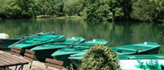
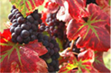
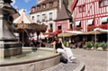
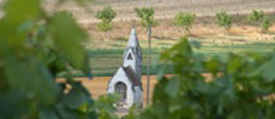

LES GREETERS DU PAYS BEAUNOIS
sont à l'image du territoire : différents selon qu'ils habitent à Beaune même ou dans les villages des alentours, selon qu'ils sont issus du monde agricole, viticole, ou d'autres métiers :
En savoir +
LES GREETERS DE LA COTE DE NUITS ET DE DIJON
Différents selon qu'ils habitent à Beaune même ou dans les villages authentiques des alentours, selon qu'ils sont issus du monde agricole, viticole, ou d'autres métiers : enseignants, sages-femmes, experts en technologies de communication, mères de famille ou même anciens élus locaux...
 En savoir +
ACTUALITÉS
Différents selon qu'ils habitent à Beaune même ou dans les villages des alentours, selon qu'ils sont issus du monde agricole, viticole, ou d'autres métiers :
En savoir +